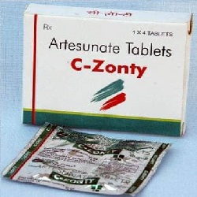

Artesunate

Artesunate ဆိုသည်မှာ ငှက်ဖျားပျောက်ဆေးအုပ်စုဝင်၏ ဆေးတစ်မျိုးဖြစ်သည်။
Plasmodium falciparum ငှက်ဖျားပိုးကို သတ်ပေးပြီး အထူးသဖြင့် Quinidine ဆေးယဉ်ပါး ငှက်ဖျားတွင်သုံးနိုင်သည်။
သောက်ဆေး၊ ထိုးဆေး၊ အကြောဆေး အမျိုးမျိုး ရှိသည်။
ဆိုးကျိုးဘာတွေရှိလဲ
ဆေးသောက်နေစဉ် ခံတွင်းပျက်ခြင်း၊ ပျို့အန်ခြင်း၊ ဆေးအရှိန်ကြောင့် ဖျားခြင်းများ ဖြစ်နိုင်သည်။
နှလုံးထိသော လက္ခဏာများလည်း ပြနိုင်သည်။
ပြင်းထန်ပါက နီးစပ်ရာ ဆေးခန်းကို အမြန်သွားပြပါ။
ဆေးမတည့်သော လက္ခဏာများဖြစ်သည့် အင်ပျဉ်ထခြင်း၊ ယားယံခြင်း၊ အသက်ရှုကြပ်ခြင်းများလည်း ဖြစ်နိုင်ပါသည်။
ဆေးသောက်လျှင် ဘာတွေ သတိပြုရမလဲ
အရင်က ငှက်ဖျားပျောက်ဆေးများ၊ အခြားဆေးများနှင့် ဓာတ်မတည့်သော လက္ခဏာဖြစ်ဖူးလျှင်၊ ကျောက်ကပ်နှင့် အသည်းမကောင်းသောသူများ ဆေးကို သတိထားပြီး သောက်ရပါမည်။
Amiodarone, Isoniazid, Ketoconazole, Methoxsalen ဆေးများနှင့် Artesunate ဆေးကိုတွဲမသောက်ရပါ။
ကိုယ်ဝန်ဆောင်နှင့်နို့တိုက်မိခင်များ ဆရာဝန်ညွှန်ကြားချက်ပါမှ သောက်ရပါမည်။
ဆေးအာနိသင် အစွမ်း ဘာတွေရှိလဲ
Artesunate ငှက်ဖျားပျောက်ဆေးသည် အခြားဆေးအမျိုးမျိုး၊ တိုင်းရင်းဆေးများနှင့်လည်း အာနိသင်ရောနိုင်သောကြောင့် မိမိသောက်နေသော ဆေးများ အားလုံးဆရာဝန်ထံ အသိပေးဖို့လိုပါမယ်။
ဆေးသောက်များလျှင်ဘာတွေဖြစ်မလဲ
ပြင်းပြင်းထန်ထန်မူးဝေခြင်း၊ ပျို့အန်ခြင်း၊ ဗိုက်အောင့်ဗိုက်နာခြင်း၊ ရင်ဘတ်အောင့်ခြင်းနှင့် အသက်ရှုကြပ်ခြင်းများ ဖြစ်နိုင်ပါတယ်။
ငှက်ဖျားဆေးများသည်ဆရာဝန်ညွှန်ကြားသည့်အတိုင်း ဆေးမပြတ်ပဲ အတိအကျသောက်နိုင်မှ ဆေးအာနိသင်ကို အကောင်းဆုံး ရနိုင်ပြီး ငှက်ဖျားရောဂါကို အမြစ်ပြတ်ကုသနိုင်မည် ဖြစ်သည်။
Source- ဒေါက်တာအိမ့်ချယ်ရီ